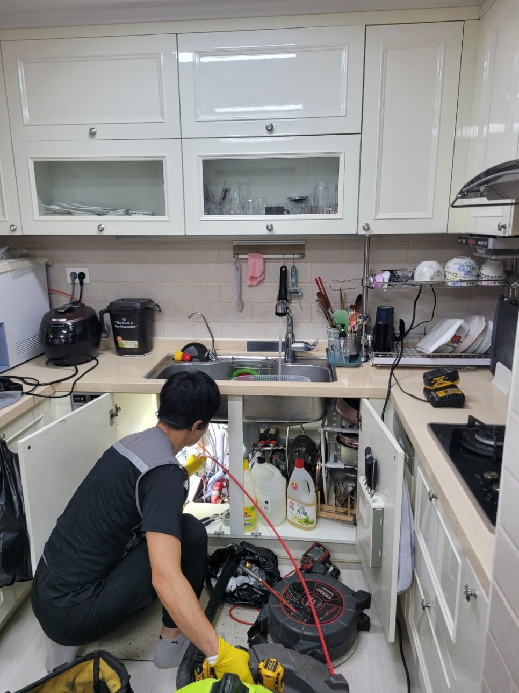
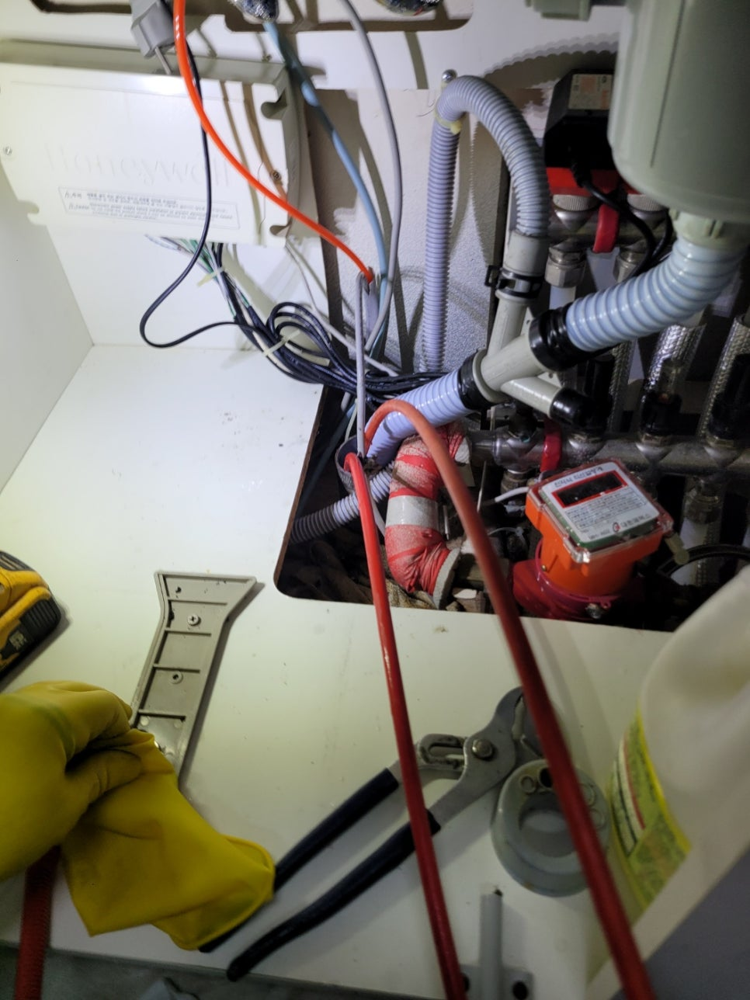
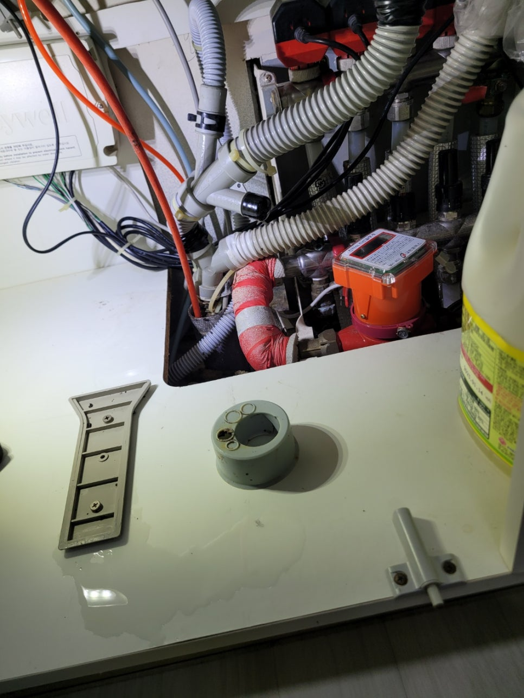
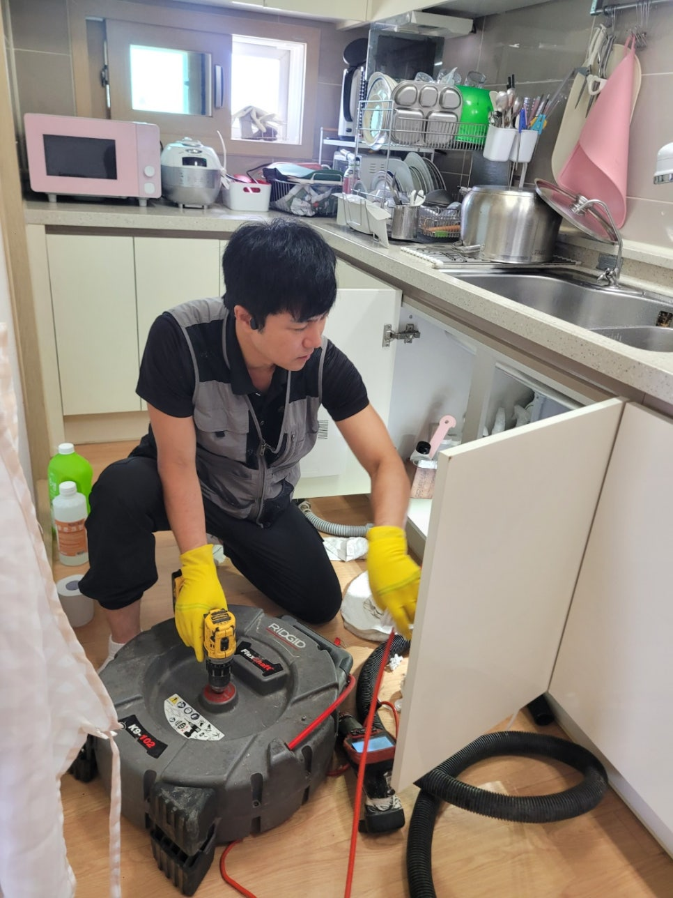
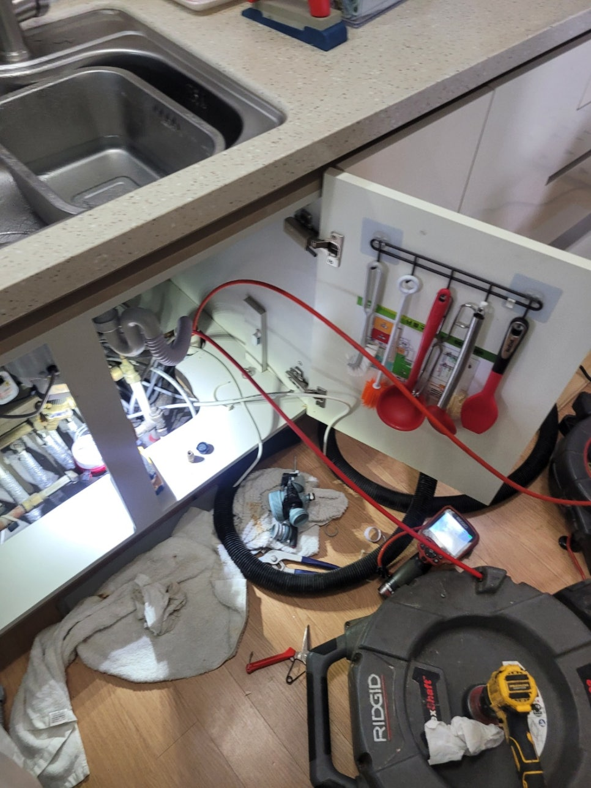
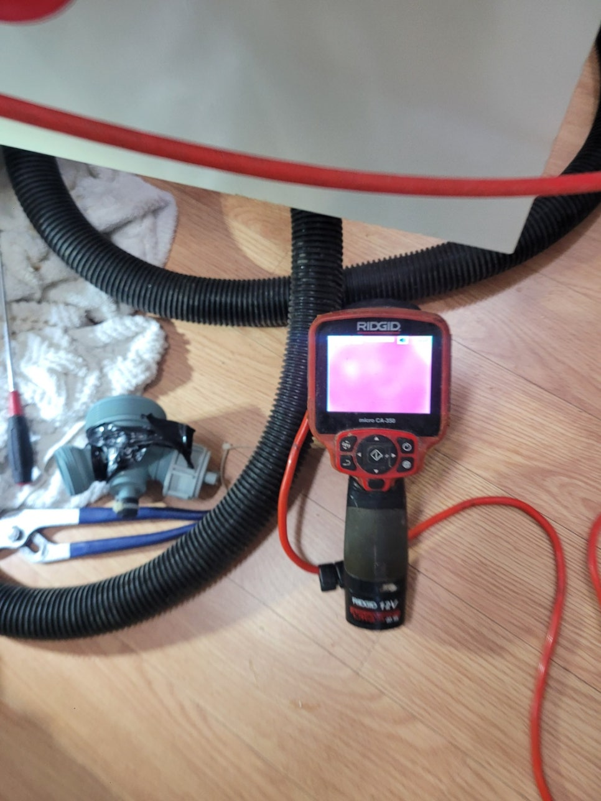
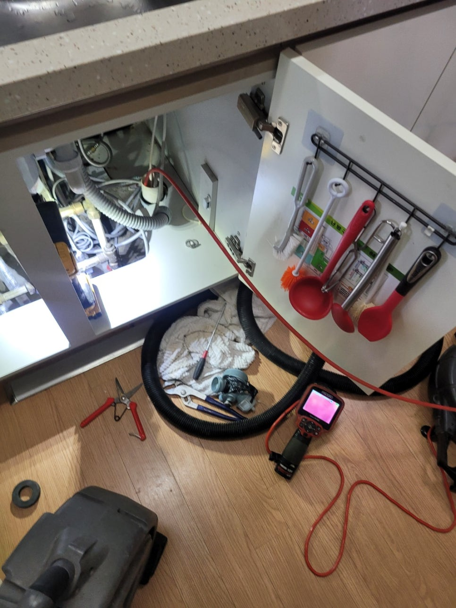

🏠 화성 봉담 싱크대막힘 와우리 하수구역류 뚫음 설비공사
화성 와우리 싱크대막힘 전문 시공 후기

📋 작업 개요
- 위치: 화성 와우리, 와우리, 화성
- 서비스 유형: 싱크대막힘, 변기막힘, 하수구막힘, 배관막힘, 맨홀막힘, 누수수리, 역류해결, 뚫는업체, 배관청소, 설비공사
- 작업 일시: 2025. 9. 1. 21:07
- 업체명: 하수구수사대 (010-5615-2118)
🔍 문제 상황
안녕하세요.
하수구전문업체 "하수구수사대" 입니다.
화성 봉담 싱크대막힘 와우리 하수구역류 뚫음 설비공사
일상 생활에서 갑자기 문제가 발생한다면 많이들 염려하시죠.
특히나 물을 많이 써야되는 주방이나 욕실에서 어느 순간 막히는 문제가 생겨서 더 이상 물을 사용하지 못하는 상황일 때에는 최대한 빨리 전문 업체에 도움을 요청하는 것이 좋습니다.
주방 싱크대에 물이 고이는 일이 발생하면 밥을 짓고 식재료를 다듬는 등의 작업에 차질이 빚어집니다.
또한 밥을 먹은 후에 설거지 하는 것도 힘들어지므로 막히기 시작하면 최대한 빨리 전문 업체를 부르시는 게 좋다는 점 잊지마세요.
얼마 전에도 아파트 사시는 고객님 댁에 싱크대 막힘 현상이 있어서 꼼꼼히 점검하고 해결해 드리고 왔습니다.
이 댁은 싱크대를 교체한 지 얼마 되지 않았는데도 이런 막힘 현상이 나타난 것이 의아하긴 했어요.
혼자 힘으로 해결할 수 없는 부분이다 보니 전문 업체인 저희한테 전화하신 것 같습니다.
현장에 방문한 후 가장 먼저 확인한 곳은 주방 하부장 아래쪽이었습니다.
싱크대 아래쪽은 벌써 물이 흘러서 축축히 젖은 것은 물론 그 양도 상당히 많을 것으로 보였습니다.

🔎 원인 분석
💡 전문가 진단: 정밀 진단 장비를 사용하여 슬러지의 고착 여부를 판명하고 타격/세척 작업을 실시했습니다.
이런 상태로 계속 방치하면 곰팡이가 발생하는 것은 물론이고 아랫집에까지 누수가 유발될 수 있어서 바로 작업을 진행했어요.
첫 번째 작업을 하기 전에 싱크대 아래에 이어져 있는 주름관을 해체해서 들여다 보니 예상대로 많은 이물질이 들어 있었습니다.
까만색 얼룩이 찌꺼기인데 이 얼룩들이 주름관 내부에 달라붙어 굳어 있습니다.
뿐만 아니라 하수도 맨 윗부분에도 까만 얼룩들이 많이 붙은 상태여서 확실히 제거하기 위해서 석션기를 사용하기로 했어요.
석션기는 주름관에 붙어있는 이물질 외에도 하수관 깊은 곳에 쌓인 것들까지도 청소할 수 있는 전문 장비이며 싱크대막힘 문제를 해결하기에 적합한 장비예요.
찌꺼기들 때문에 하수도 입구가 막혔을 때에도 이 석션기를 이용해 금방 해결할 수 있답니다.
본격적으로 배관을 뚫으려면 석션기로 하수관 내부를 일단 청소하는데, 문제 해결 방법을 파악하기 위한 단계로 보시면 될 것 같아요.
석션기를 계속 작동시켰는데도 막힘 문제가 해결되지 않았기 때문에 배관 깊은 곳을 보다 정확하게 확인하기로 했어요.
저희가 보유하고 있는 배관 내시경 기기를 투입해 배관 깊숙한 곳까지 점검하는 것인데요.
지금 이 사진에서는 전부 빨간색으로만 나타나고 있죠.
설비 헤드쪽에 전등이 달려있는데, 그 불로 기름때를 비춰보면 빨갛게 보이거든요.
그러니까, 하구관 내에 기름찌꺼기가 쌓인 경우 모니터 상에서 빨갛게 나타난다는 뜻이에요.
좀 더 구석구석 점검해 보니 배관 청소가 시급한 듯 했습니다.

🔧 작업 과정
이번 고객님 댁에서 싱크대 물고임이 발생하는 것은 싱크대 배관 내부에 오랫동안 축적되어 굳어진 음식물 찌꺼기들이라고 판단할 수 있었는데요.
그래서 기름때를 제거할 때 적합한 장비로 완벽하게 청소해 드리기로 결정했어요.
이 작업을 할 때 쓰는 전문 장비 플렉스 샤프트를 준비했어요.
샤프트 케이블 끝 부분에는 달려있는 헤드가 체인 형태이다 보니 커다란 이물질들도 부셔서 쉽게 흡입되도록 하는 것입니다.
이처럼 잘게 부숴 놓으면 처음에는 빠지지 않았던 이물질도 싹 다 배관 밖으로 배출시킬 수 있습니다.
물론 하수관 상태와 이물질의 위치를 확인하면서 장비를 사용해야 한다는 점이 중요합니다.
샤프트 작업을 시작할 때마다 배관 내시경 카메라를 통해 배관 상황을 정확하게 체크하였고, 도중에 석션도 진행해서 이물질이 없는 깨끗한 하수관이 되도록 신경써 드렸어요.
저희들은 겉으로 보이는 것만 해결하고 끝내는 경우는 없습니다.
문제가 발생한 이유를 특정하고 완전히 제거해서 싱크대 물고임 증상을 해결하고 배관 안쪽까지 모두 점검하여 기름찌꺼기도 모두 제거해 드립니다.
통수 테스트를 진행하니 하수가 고이는 현상 없이 원활하게 배수되는 것을 보아 공사가 잘 이루어진 것을 확인할 수 있었습니다.
청소가 모두 완료되면 석션기의 통 안에는 배관 속에 축적되어 있었던 기름찌꺼기들이 담기게 됩니다.
잘 보시면 바닥에 찌꺼기들이 내려앉은 것을 확인할 수 있습니다.
이런 것들은 배관에 그냥 부으면 안되기 때문에 거름망을 이용해 건더기들을 별도로 거른 다음 분리해서 폐기하고 있습니다.
대부분의 경우 이 정도로 모든 작업이 끝나게 됩니다.
이번 현장의 주름관은 굉장히 노후된 상태여서 쓸 수가 없었어요.
이 주름관도 새로 바꿨더니 그간 있었던 물고임이 완전히 해결되더라구요.
주방 싱크대가 계속해서 막힌다면 시중의 배관 세정제를 이용해서는 해결하기가 힘들어요.
그 밖에 슬러지가 단단히 쌓여있다면 전문 기계를 이용해 안전하고 정확하게 작업할 필요가 있습니다.
전문가의 도움을 요청해야 배관이 손상되는 일 없이 문제가 해결됩니다.
그렇기 때문에 내시경 카메라나 배관 막힘 전문 도구를 갖고 있는 업체를 이용하셔야 작업이 신속히 진행됨을 참고하세요.


✅ 작업 완료
막힘 문제로 배관을 확인해야 한다면 실력과 장비를 갖춘 저희업체에 맡겨주시면 문제의 근본적인 원인까지 해결해 드려요.
하수구수사대 010 2340 2118
경기도 수원시 권선구 매송고색로533번길 7 상가동 B층 01호 298
#봉담하수구막힘 #봉담싱크대막힘 #봉담싱크대역류 #봉담배수관막힘 #봉담배관뚫는곳 #봉담설비 #봉담맨홀막힘 #봉담하수구뚫는업체 #봉담변기막힘
#와우리하수구막힘 #와우리싱크대막힘 #와우리싱크대역류 #ㅍ하수구역류 #와우리화장실막힘 #와우리설비 #와우리하수구뚫는곳 #와우리하수구뚫는업체 #와우리변기막힘




⚠️ 베란다 누수 및 방수 관리 방법
- ✅ 비가 많이 올 때 창틀 주변이나 아래층 천장에 얼룩이 생기는지 정기적으로 확인해 보세요.
- ✅ 우수관 주변 실리콘 마감이 들뜨거나 깨진 틈새가 있는지 손상 여부를 수시로 체크하세요.
- ✅ 베란다 바닥 타일의 줄눈(메지)이 소실되면 그 틈으로 물이 침투하여 누수가 유발됩니다.
- ✅ 누수 의심 증상 발견 시 방치하면 아래층 손실이 커지므로 즉시 전문가의 진단을 받으십시오.
💡 핵심 정리
- 확실한 장비 작업(내시경 점검 및 샤프트 스케일링)으로 원인을 뿌리 뽑습니다.
- 작업 후 1년 이내에 동일한 부위 재발 시 100% 무상 A/S 서비스를 보장합니다.
- 서울 · 경기 · 인천 전 지역에 24시간 언제든 긴급 출동할 수 있도록 항시 대기 중입니다.
❓ 자주 묻는 질문 (FAQ)
🚨 화성 와우리 싱크대막힘 문제로 고민이신가요?
정확한 원인 진단과 확실한 시공으로 재발 없는 해결을 약속드립니다.
24시간 긴급 출동 | 서울 · 경기 · 인천 전지역 | 1년 내 재발 시 무상 A/S